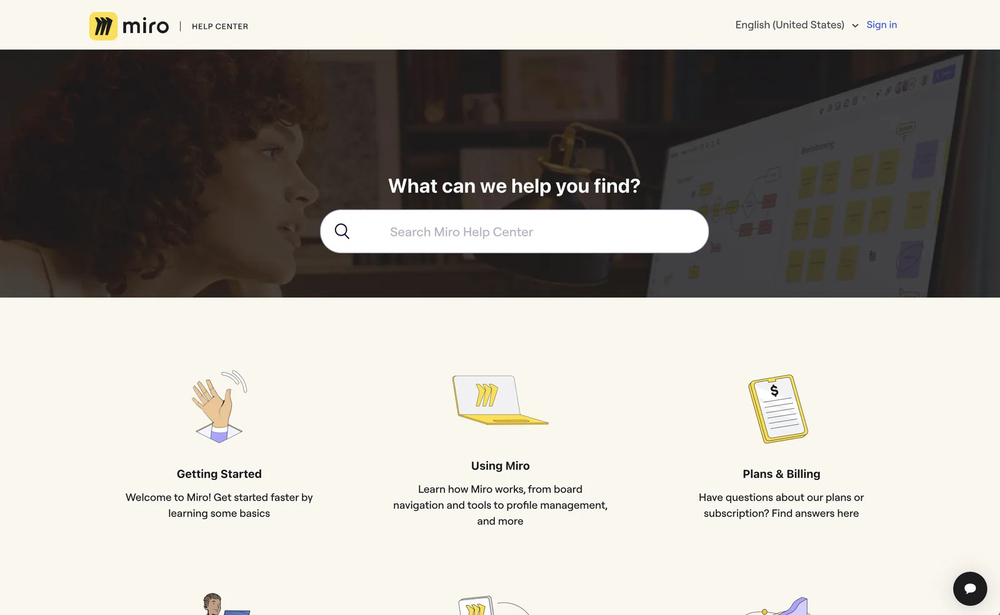
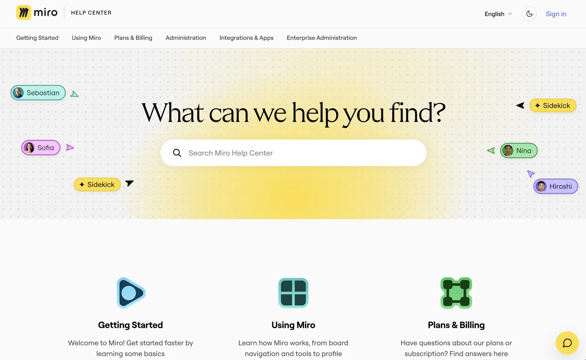
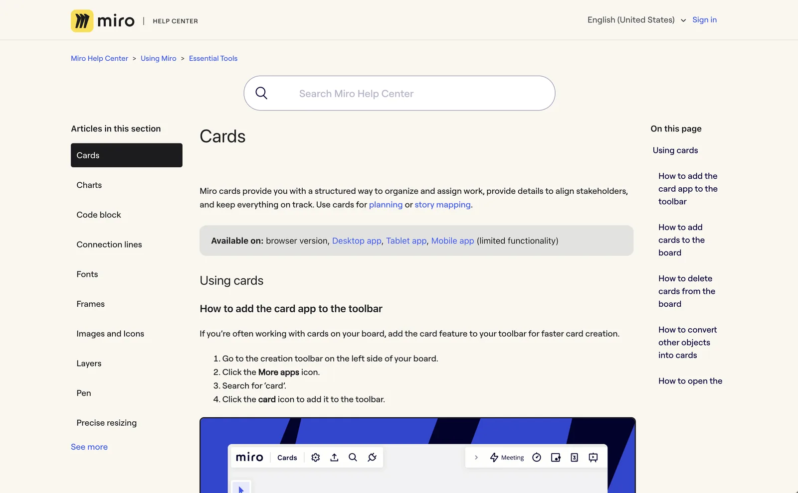
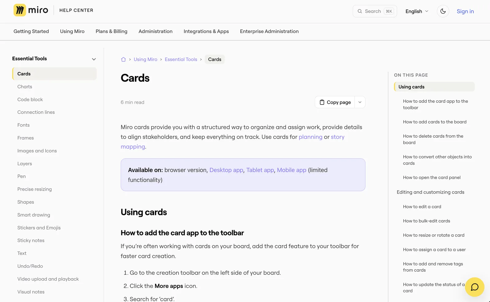
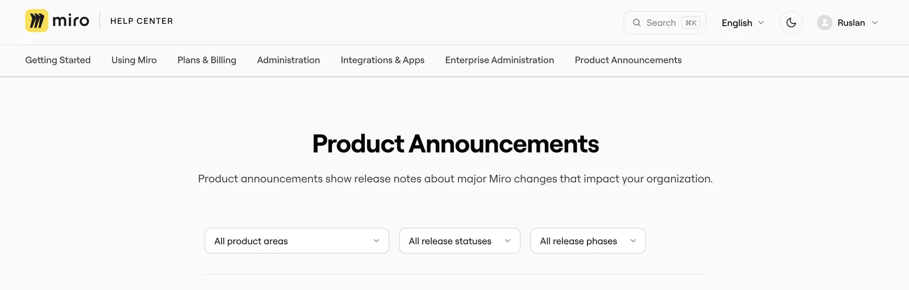

Redesigning the Miro Help Center
How I rebuilt the Help Center's Zendesk theme so readers find answers faster, in their own language, and can hand any article to an AI assistant.
In October 2026 the Miro Help Center switched to a new theme. The same 1,000 articles stayed at the same URLs, but readers got a new way to find and read them. I led the redesign and built the theme: 27 versions between July and October, each previewed on a sandbox before it went near production.
This is the second half of a bigger change. The first half moved the content itself into Git.
At a glance
- Scope: 11 of the theme's 22 Zendesk templates rebuilt, plus its CSS and JavaScript.
- Languages: English and seven translations. Every new piece of interface text can be translated.
- Shipped: version 2.0.27 replaced 1.4.17 on help.miro.com in October 2026.
- Nothing dropped: every redirect, support-widget rule and tracking hook from the old theme carried over.
What wasn't working
- Getting around. There was no top-level navigation. The sidebar listed only the current section, with a "See more" link, so moving to another area of the product meant going back to the home page.
- Search took over every page. A large search box sat above every article, pushing the content down, and it moved to a different place on category pages.
- One look, hard-coded. The stylesheet had a single CSS variable. Colours were written out by hand across 6,500 lines, so there was no practical way to offer dark mode.
- Mixed languages. About 35 pieces of interface text were hard-coded in English, plus the messages in the JavaScript. Readers of a translated page still saw English labels.
- Feedback went nowhere. Answers to "Was this helpful?" had been silently lost since 2022, and comments containing
&,#or+were cut off.




What changed for readers
Finding the right article
Every page now has the full list of categories across the top. The sidebar shows the whole category as a tree that readers can expand and collapse, with the current article highlighted and its group already open. Breadcrumbs show the full path, starting from a home icon. The "On this page" list stays in view and highlights the heading you're reading, and every heading has its own link, so support agents can send a customer to the exact step.




Searching from anywhere
Search moved into a compact box in the header. It opens a full-screen search with ⌘K or Ctrl+K from any page. An empty search shows your recent searches, the first result is selected so Enter opens it, and each result shows which section it comes from.
Reading comfortably
- Dark mode. One toggle in the header. The choice is applied before the page draws, so there's no white flash.
- Reading time. Each article shows an estimate. For Japanese and Chinese it counts characters instead of words.
- Wide tables scroll sideways instead of squeezing their columns.
- Accessibility. Visible focus styles, far more labelled controls (ARIA attributes went from 45 to 175), and no animation for readers who've turned motion off.
How do you hand a help article to an AI assistant?
Many readers now paste help articles into ChatGPT or Claude. Every article has a Copy page button that copies it as clean Markdown. Its menu also opens the article in ChatGPT, Claude or Gemini with a ready-made prompt. Zendesk can't serve Markdown itself, so the theme converts the page in the browser. For agents that read the whole Help Center, the docs-as-code pipeline publishes llms.txt and Markdown bundles.
Product announcements
The release-notes category already had filters by product area, status and phase. The redesign translated their labels, added page numbers and gave the status badges colours that work in dark mode.


In every language
The theme added 82 new translation keys, agreed with the localization team so they fit the team's existing workflow. Messages written by the JavaScript go through a small helper that reads the translated text from the page and fills in values like counts. If a translation doesn't exist yet, the reader sees English rather than a blank. A handful of labels are still English only, and they're on the list for the next release.
How do you ship a theme redesign without breaking a live site?
- Sandbox first. Every change went to a sandbox Help Center first. The production build is made from the sandbox one and differs only in its name and a few IDs, so what I previewed is what shipped.
- One version per change. Each new behaviour got its own version number, so the previous build was always a clean rollback.
- Merge the live site in. The redesign started from an older copy of the live theme. Before production, I merged in everything the live theme had gained since, including redirects, support-widget rules, chat and table styles.
- Design tokens. The stylesheet went from 1 CSS variable to 90. Colours are defined once, and dark mode swaps the set.
- Navigation that respects permissions. The menus are built from the Help Center's API and cached for each audience and language separately, so a reader never sees an article that's meant for someone else.
- Feedback restored. "Was this helpful?" answers reach the team again, with the full comment.
Trade-offs and what's next
- It's heavier. The CSS went from 127 KB to 247 KB and the JavaScript from 21 KB to 82 KB. The navigation is built in the browser, so it needs JavaScript, and a reader's first visit fetches the article list in several requests before the cache takes over.
- The CSS grew in layers. Later rounds of changes were added as overrides on top of earlier ones. Folding them into the tokens is the next clean-up.
- Accessibility isn't finished. The search overlay needs proper dialog behaviour and focus handling, the "Was this helpful?" answers should be real buttons, and dark mode should follow the reader's system setting.
- Copy page has limits. The Markdown conversion flattens tables and nested lists.